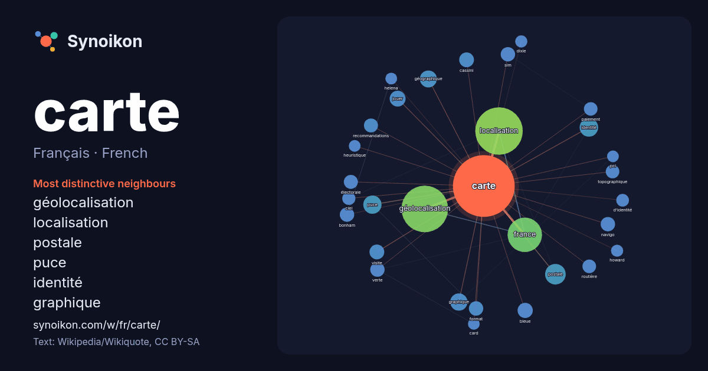

Français · French · word of the day list
carte
“map” · The words found around it in 1828 instances from French Wikipedia, Wikiquote.

Most distinctive neighbours
- géolocalisation 188×
- localisation 144×
- postale 36×
- puce 29×
- identité 26×
- graphique 22×
- géographique 19×
- navigo 19×
- bonham 19×
- sim 19×
- bleue 19×
- recommandations 17×
- topographique 16×
- verte 16×
- cassini 15×
- routière 15×
- électorale 15×
- paiement 15×
- format 14×
- jouer 14×
× = how many times more often than in general French Wikipedia text.
Most frequent neighbours
- localisation 196
- géolocalisation 189
- france 103
- nom 44
- postale 37
- identité 30
- puce 29
- type 28
- graphique 26
- géographique 25
- jeu 25
- joueur 24
- john 23
- jouer 22
- paris 21
- bleue 20
- cassini 19
- dernière 19
- face 19
- monde 19
In context
- détaillé : Carte géographique. Carte à bâtonnets, cartes nautiques produites par les habitants des îles Marshall afin de se repérer sur l'océan Carte aéronautique Wikipedia snippets · Carte
- voir Cassini. Carte de Cassini Extrait de la carte de Cassini : le domaine royal de Versailles. La carte de Cassini, aussi appelée carte de l'Académie Wikipedia snippets · Carte de Cassini
- Pour l’article ayant un titre homophone, voir Carte mer. Carte mère Une carte mère avec au centre à gauche en blanc le support du microprocesseur, en Wikipedia snippets · Carte mère
- correspondants. Une carte en T, ou carte en TO (TO pour Terrarum Orbis), était une représentation du monde connu au Moyen Âge. Sur la carte TO, tournée vers Wikipedia snippets · Carte en T
- domiciliés. On trouve une carte scolaire dans différents pays dont le Japon, la Suède, la Finlande, l'Australie ou la France. L'idée de carte scolaire vient du Wikipedia snippets · Carte scolaire
- Une carte SD (« SD » étant le sigle de l'expression anglaise « Secure Digital ») est une carte mémoire de stockage de données numériques créée en janvier Wikipedia snippets · Carte SD
- Carte perforée Une carte perforée est un morceau de fin carton rigide dont la surface peut être lue par un dispositif repérant la présence ou l'absence Wikipedia snippets · Carte perforée
- La carte d'état-major est une carte générale de la France réalisée, dans sa première version, au XIXe siècle. Une ordonnance royale de 1827 en confie l'e … Wikipedia snippets · Carte d'état-major
More French words
- art
- automne
- chanson
- chat
- chemin
- cheval
- chien
- climat
- cloche
- cœur
- dieu
- désert
- eau
- famille
- forêt
- histoire
- hiver
- horloge
- jardin
- langue
- miel
- miroir
- monnaie
- montagne
- mort
- mère
- nature
- nourriture
- ombre
- pain
- pluie
- pont
- pouvoir
- printemps
- santé
- science
- sel
- silence
- temps
- tempête
- thé
- train
- travail
- trésor
- vie
- ville
- vérité
- étoile
- île
Precomputed on 2026-10-09 with default settings (±5 words, medium corpus). The interactive map can refresh it with live data.